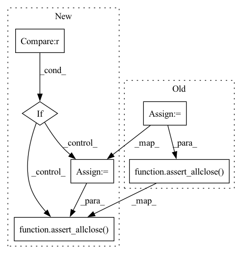

Pattern ID :34798

Before Change
shape = (t.size,) + start.shape
expected = np.full(shape, start)
actual = geometric_slerp(start=start, end=start, t=t)
assert_allclose(actual, expected)
// Check that degenerate and non-degenerate inputs yield the same size
non_degenerate = geometric_slerp(start=start, end=start[::-1], t=t)
assert actual.size == non_degenerate.size
After Change
np.linspace(0, 1, 5),
])
def test_degenerate_input(self, start, t):
if np.asarray(t).ndim > 1:
with pytest.raises(ValueError):
geometric_slerp(start=start, end=start, t=t)
else:
shape = (t.size,) + start.shape
expected = np.full(shape, start)
actual = geometric_slerp(start=start, end=start, t=t)
assert_allclose(actual, expected)
// Check that degenerate and non-degenerate
// inputs yield the same size
non_degenerate = geometric_slerp(start=start, end=start[::-1], t=t)
In pattern: SUPERPATTERN
Frequency: 3
Non-data size: 6
Instances
Fragment ID: 99780018
Project Name: scipy/scipy
Commit Name: 1f3ceabb48964d8cec4eca6f7f277f5181e4cdf7
Time: 2021-07-25
Author: tyler.je.reddy@gmail.com
File Name: scipy/spatial/tests/test_slerp.py
M Class Name: TestGeometricSlerp
N Class Name: TestGeometricSlerp
M Method Name: test_degenerate_input(3)
N Method Name: test_degenerate_input(3)
M Parent Class:
N Parent Class:
M File Name: scipy/spatial/tests/test_slerp.py
N File Name: scipy/spatial/tests/test_slerp.py
M Start Line: 366
M End Line: 374
N Start Line: 366
N End Line: 382
'>
Before Change
normalize=True,
)
assert len(loglikelihoods) == len(sequences)
results = loglikelihoods_results[test_trans._model_dir][params]
assert_allclose(loglikelihoods, results, rtol=0.01)
@pytest.mark.parametrize("batch_size, tokens_list, pass_mode", test_params_fasta)
def test_loglikelihoods_type_shape_and_range_fasta(
After Change
normalize=True,
)
assert len(loglikelihoods) == len(sequences)
if test_trans._model_dir in loglikelihoods_results.keys():
results = loglikelihoods_results[test_trans._model_dir][params]
assert_allclose(loglikelihoods, results, rtol=0.01)
@pytest.mark.parametrize("batch_size, tokens_list, pass_mode", test_params_fasta)
def test_loglikelihoods_type_shape_and_range_fasta(
'>
Fragment ID: 99780022
Project Name: deepchainbio/bio-transformers
Commit Name: 032693b08bba38d89ab74004fd86d060f2f593fc
Time: 2021-07-16
Author: a.delfosse@instadeep.com
File Name: biotransformers/tests/test_loglikelihoods.py
M Class Name: AnonimousClass
N Class Name: AnonimousClass
M Method Name: test_loglikelihoods_type_shape_and_range(7)
N Method Name: test_loglikelihoods_type_shape_and_range(7)
M Parent Class:
N Parent Class:
M File Name: biotransformers/tests/test_loglikelihoods.py
N File Name: biotransformers/tests/test_loglikelihoods.py
M Start Line: 27
M End Line: 28
N Start Line: 18
N End Line: 31
'>
Before Change
normalize=True,
)
assert len(loglikelihoods) == len(lengths_sequence_fasta)
results = loglikelihoods_fasta_results[test_trans._model_dir]
assert_allclose(loglikelihoods, results, rtol=0.01)
After Change
normalize=True,
)
assert len(loglikelihoods) == len(lengths_sequence_fasta)
if test_trans._model_dir in loglikelihoods_fasta_results.keys():
results = loglikelihoods_fasta_results[test_trans._model_dir]
assert_allclose(loglikelihoods, results, rtol=0.01)
'>
Fragment ID: 99780021
Project Name: deepchainbio/bio-transformers
Commit Name: 032693b08bba38d89ab74004fd86d060f2f593fc
Time: 2021-07-16
Author: a.delfosse@instadeep.com
File Name: biotransformers/tests/test_loglikelihoods.py
M Class Name: AnonimousClass
N Class Name: AnonimousClass
M Method Name: test_loglikelihoods_type_shape_and_range_fasta(7)
N Method Name: test_loglikelihoods_type_shape_and_range_fasta(7)
M Parent Class:
N Parent Class:
M File Name: biotransformers/tests/test_loglikelihoods.py
N File Name: biotransformers/tests/test_loglikelihoods.py
M Start Line: 50
M End Line: 51
N Start Line: 42
N End Line: 53